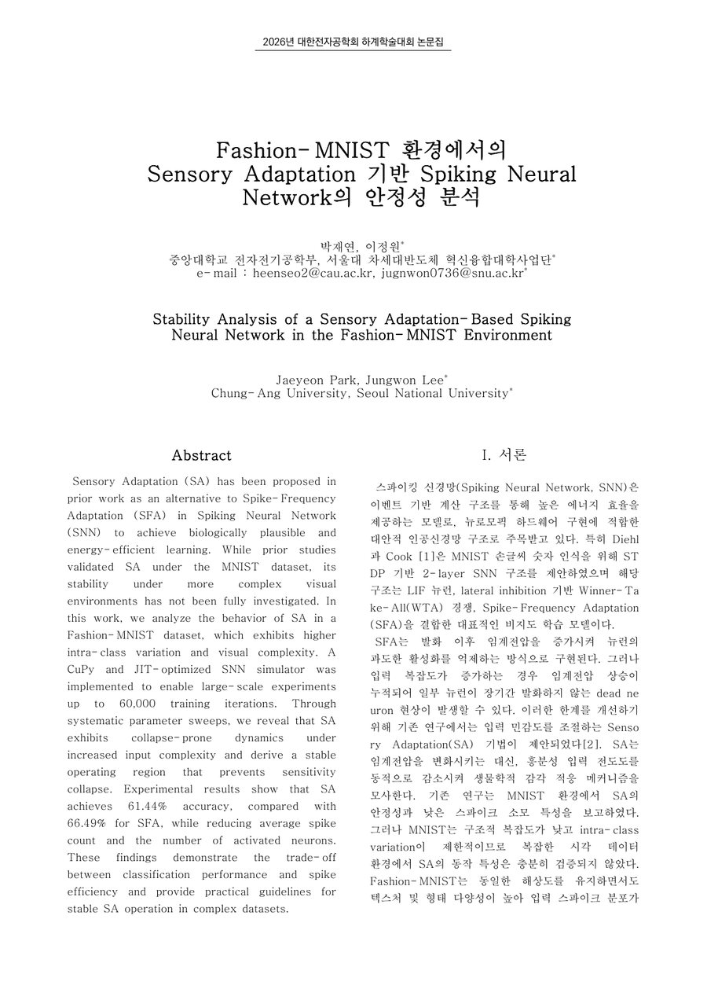
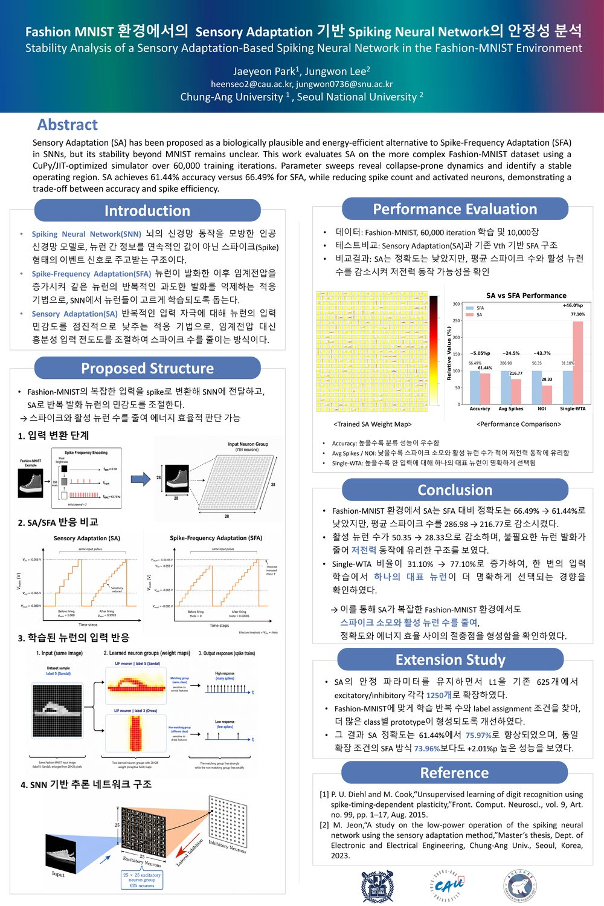

Jay Tech Notes
제가 직접 정리한 기술 글, 실험 기록, 논문 메모를 모아두는 개인 페이지입니다. 진행 중인 연구·개발 카드 중 상세 페이지가 준비된 항목은 클릭할 수 있고, 아직 정리 중인 일부 카드는 클릭되지 않습니다. 그 외 공개 노트와 프로젝트 카드는 모두 클릭해 각 글과 자료를 확인할 수 있습니다. SNN 연구, NRV DVS 캘리브레이션, FPGA 트러블슈팅, SoC/FPGA 학습과 두 경진대회의 설계·구현·검증 기록을 함께 공개하고 있습니다.
진행 중인 연구·개발
졸업논문, 실험 환경, 제품 설계, 센서 데이터셋과 FPGA 영상처리까지 현재 진행하거나 준비 중인 작업을 목표 일정과 함께 정리했습니다.
공개 글 묶음SNN 연구 기록
Fashion-MNIST 환경에서 Sensory Adaptation 기반 SNN을 분석한 논문, 포스터, 공개 코드 저장소를 한 묶음으로 정리했습니다.
공개 글 묶음NRV DVS 캘리브레이션
이벤트 카메라 캘리브레이션을 처음 보는 사람도 따라갈 수 있도록 개념, 패턴, 촬영 준비 순서로 정리했습니다.
개발 기록 묶음NRV FPGA 트러블슈팅
NRV FPGA와 카메라 모듈 개발 중 만난 오류를 로그와 검증 결과를 따라가며 해결한 과정을 정리했습니다.
프로젝트 묶음공개 프로젝트
캘리브레이션 글과 함께 볼 수 있는 GitHub 프로젝트도 별도의 글 묶음으로 정리합니다.
학습 노트 묶음SoC/FPGA Bus
숭실대 학부생연구인턴에서 정리한 APB, AHB, AXI와 AXI-to-APB Bridge 구현·검증 흐름을 나누어 정리했습니다.
경진대회 노트 묶음경진대회 기술 노트
제가 참여한 두 경진대회에서 진행한 SNN 제어 회로와 YOLOv2 FPGA 가속기의 설계·구현·검증 내용을 정리했습니다.
0. 진행 중인 연구·개발
아직 완성 전이거나 다음 단계로 준비 중인 연구와 제품 개발 계획입니다. 아래 카드는 현재 방향과 목표 일정을 정리한 미리보기이며, 상세 페이지는 결과가 정리되는 대로 연결할 예정입니다.
 01
졸업논문 · 드론 모션캡처
01
졸업논문 · 드론 모션캡처
LED 모션캡처 기반 드론 비행경로 제어 시스템
드론의 LED 빛을 여러 카메라로 감지해 위치와 이동 경로를 추적하고, 모션캡처 결과를 이용해 드론 비행경로를 제어하는 시스템을 구현하고 있습니다. 휴대폰 앱에서 목표 경로를 입력하고, 실제 이동 경로와 비행 결과를 실시간으로 확인할 수 있도록 구성합니다. 중앙대학교 전자전기공학부 제어 및 로봇 SLAM 연구실을 운영하는 심덕선 교수님의 지도 아래 진행하고 있습니다.
2026년 10월 10일까지 졸업논문을 완성하고 대한전자공학회 2026년도 추계학술대회 제출을 목표로 합니다.
상세 계획 보기 →산업용 로봇팔 기반 경로 검증 환경
NRV가 보유한 산업용 로봇팔에 드론을 고정하고, 로봇팔에 입력한 기준 경로와 모션캡처가 검출한 경로를 비교하는 Ground Truth 환경을 만들 계획입니다. 이를 위해 로봇팔의 운용법과 제어 방법을 익히며, 실험 조건에 따라 산업용 리니어 모터도 함께 활용하는 방안을 검토합니다.
졸업논문 시스템과 같은 일정인 2026년 10월 10일까지 검증 환경 완성을 목표로 합니다.
 03
Product Design · CAD/3D Printing
03
Product Design · CAD/3D Printing
신규 카메라 모듈 제품 케이스 제작
미리보기 이미지는 카메라 케이스 설계를 위해 제가 직접 제작한 단순화된 비기능성 3D 더미 모델을 캡처한 화면입니다. 실제 회로 및 PCB 설계 정보는 포함하지 않습니다. NRV의 신규 카메라 모듈 출시에 맞춰 실제 제품에 들어갈 외장 케이스를 제작하고 있으며, 앞서 스테레오 카메라용 3D 프린팅 브라켓을 설계하며 익힌 CAD 모델링과 3D 프린터 운용 경험을 제품 구조, 조립성, 커넥터 배치와 케이블 간섭을 고려한 케이스 설계에 적용합니다.
설계 검토와 출력·조립 확인을 거쳐 2026년 8월 안에 완성할 예정입니다.
이벤트 카메라·LiDAR 융합 데이터셋
공개 데이터셋이 연구와 제품 활용 생태계를 넓히는 기반이 되는 만큼, NRV 이벤트 카메라로 주행 장면과 동적 장면을 기록한 데이터셋을 만드는 프로젝트에 팀원으로 참가하고 있습니다. NRV가 보유한 LiDAR 센서의 운용과 제어 방법을 익히고, 이벤트 데이터와 거리 정보를 함께 수집·정렬할 수 있는 기록 환경을 구성합니다.
데이터 수집 절차와 센서 연동을 포함해 2026년 11월까지 완성할 예정입니다.
FPGA 실시간 스테레오 정렬·보정
현재 NRV 이벤트 카메라 캘리브레이션을 담당하며 실제 촬영, 파라미터 계산, 결과 확인까지 수행하는 앱 개발을 완료했습니다. 다음 단계에서는 계산된 캘리브레이션 파라미터를 카메라 모듈의 FPGA에 입력해 왜곡 보정과 스테레오 정렬을 실시간으로 처리하는 기능을 구현할 계획입니다.
스테레오 카메라는 단일 카메라보다 물리적 정렬과 보정이 까다롭기 때문에, 앞서 제작한 3D 프린팅 브라켓도 이 문제를 먼저 이해하고 해결하기 위한 준비 과정이었습니다. 2027년 1월 1일까지 기능 구현과 논문 정리를 마치고 실제 제품 적용과 출시까지 연결하는 것이 목표입니다.
SNN 연구 노트
Fashion-MNIST 환경에서 Sensory Adaptation 기반 Spiking Neural Network의 안정성을 분석한 논문과 포스터, 그리고 해당 연구에 사용한 공개 코드 저장소를 함께 묶었습니다. 논문 본편은 625-neuron 기준 안정성 분석이고, 후속 확장 연구는 1250-neuron 구조에서 SA 성능을 개선한 결과입니다.

01 Paper PDFSA 기반 SNN 안정성 분석 논문
2026년도 대한전자공학회 하계학술대회 논문집 포스터 부문 pp.811-814에 게재된 Fashion-MNIST Sensory Adaptation SNN 논문입니다.

02 Poster PDF학술대회 포스터
2026.6.23. 발표 포스터입니다. 논문 요약과 1250-neuron 후속 확장 결과를 함께 정리했습니다.
03 Paper codefashion-mnist-sa-snn
논문 본편의 Fashion-MNIST SA/SFA 비교 실험 코드입니다.
04 Extension codefashion-mnist-sa-1250-extension
1250-neuron 구조로 확장한 후속 연구 코드입니다.
NRV DVS 캘리브레이션 설명
캘리브레이션을 처음 접하는 사람도 전체 흐름을 따라갈 수 있도록 개념, NRV DVS용 패턴, 촬영 준비, 실제 앱 실행 절차로 나누어 정리했습니다. NRV 이벤트 카메라의 캘리브레이션 기능은 제가 직접 구현했으며, 아래의 한글 사용·설명 문서도 직접 작성했습니다.
1. 카메라 캘리브레이션이란?
카메라 캘리브레이션의 기본 개념, 필요한 이유, 추정되는 파라미터와 모노·스테레오 NRV DVS 적용 방식을 설명합니다.
022. NRV DVS 캘리브레이션 방법
NRV DVS 캘리브레이션에서 밝기 변화와 blinking asymmetric circle grid가 필요한 이유를 설명합니다.
033. 촬영 환경과 준비
필요한 장비와 모니터 설정, 원 간격 측정, 카메라 고정과 권장 촬영 조건을 설명합니다.
044. 캘리브레이션 촬영 및 처리 절차
직접 구현한 DVS Calibration 앱에서 촬영, 후보 선별, Coverage 확인, 계산과 결과 보관까지 진행하는 방법을 설명합니다.
NRV FPGA 트러블슈팅 노트
NRV FPGA와 카메라 모듈 개발 중 직접 확인한 오류를 증상, 로그, 가설, 확인, 원인, 해결, 검증 순서로 정리합니다. 단순한 해결 명령보다 같은 증상이 생겼을 때 원인을 다시 좁힐 수 있는 판단 근거를 남깁니다.

GitHub 프로젝트 링크
아래 프로젝트는 NRV DVS 캘리브레이션 설명과 별도로 공개한 개인 GitHub 프로젝트입니다. 자세한 사용법과 코드는 각 저장소에서 확인할 수 있습니다.
 01
Calibration target
01
Calibration target
blinking-circle-grid-for-dvs-calibration
NRV DVS 캘리브레이션에 사용할 blinking asymmetric circle grid 패턴을 모니터에 표시하기 위한 프로젝트입니다.
 02
Event camera target
02
Event camera target
event-arduino-stopwatch-target
이벤트 카메라 실험에서 시간 변화가 있는 타깃을 구성하고 확인하기 위한 Arduino 기반 스톱워치 타깃 프로젝트입니다.
 03
3D printed bracket
03
3D printed bracket
stereo-fpga-camera-bracket
스테레오 이벤트 카메라 모듈과 FPGA 보드를 고정하고 기준 거리 조절을 위해 직접 설계·출력한 3D 프린팅 브라켓의 설계와 조립 기록입니다.
SoC/FPGA 학습 노트
숭실대학교 차세대반도체학과 동계 학부생연구인턴에서 학습한 APB, AHB, AXI bus protocol과 AXI-to-APB Bridge 최종 프로젝트를 수업자료, Lab 파형, 최종 RTL 검증 결과 기준으로 나누어 정리했습니다. 첫 화면에서는 각 개념으로 들어가는 입구만 제공하고, 자세한 설명은 개별 페이지에서 확인할 수 있습니다.
APB Control Bus
Lab2~4에서 진행한 APB register, SRAM, interrupt 실습과 setup-enable timing을 설명합니다.
02AHB Pipelined Bus
Lab5~6의 AHB register/SRAM 실습을 바탕으로 address/data phase와 HREADY timing을 정리합니다.
03AXI Channel Bus
Lab7 AXI slave 실습을 기준으로 AW/W/B, AR/R channel과 VALID/READY handshake를 설명합니다.
04AXI-to-APB Bridge
최종 프로젝트의 AXI-to-APB protocol conversion, Verilog FSM, testbench, PASS 로그를 정리합니다.
경진대회 기술 케이스 스터디
결과를 시간순으로 나열하지 않고, 문제를 어떻게 해석하고 어떤 구조를 선택했으며 무엇으로 동작을 확인했는지 프로젝트별 네 편으로 정리했습니다.
SNN 기반 BallControl 제어 회로
30×30cm 보드 위 공의 위치를 중앙으로 되돌리는 과제를 SNN 회로 문제로 바꿨습니다. 위치는 99개 one-hot 입력으로, 무게는 rate encoding으로 표현하고, 99→32→4 뉴런 구조에서 네 방향 제어 이벤트를 만들었습니다. 최종 발표는 네트워크 시뮬레이션과 합성·전력 추정까지 다루며, 실제 카메라와 모터를 연결한 물리 폐루프 검증은 포함하지 않습니다.
- 핵심 개념
- One-hot 위치 부호화 · LIF 뉴런 · Rate encoding · 방향별 spike decoding
- 제가 맡은 일
- 팀장 · 요구사항 해석 · SNN/LIF 조사 · RTL 통합 방향 · 실험과 발표 정리
- 확인 범위
- 기능 시뮬레이션 · 합성 자원 · Vivado 전력 추정 · 한계 분석
YOLOv2 Full-Graph FPGA 가속기
256×256 RGB 입력에서 60개 클래스를 검출하는 YOLOv2를 정수화하고, Conv·Pool·Route·Upsample과 두 detection head를 하나의 FPGA 실행 경로로 연결했습니다. 최종 RTL의 22개 descriptor와 144개 packed MAC lane을 기준으로 구조를 설명하고, 229장 전체 평가의 속도와 detector mAP로 결과를 확인했습니다.
- 핵심 개념
- INT8 저장 · INT32 누산 · Requantization · Descriptor scheduler · DDR workspace
- 제가 맡은 일
- 양자화 탐색 · 정수 모델–RTL 연결 · 통합과 병목 개선 · 보드 검증 · 제출 패키징
- 최종 확인
- 229/229 PASS · 11.420687 compute-only FPS · 78.60% detector mAP
프로젝트 전체 보기
정수 모델부터 FPGA 두 검출 경로, 최종 수치와 제 역할까지 먼저 살펴봅니다.
AIX-01정수 양자화 설계
32장 calibration과 mAP 평가로 INT8·INT32·requantization 조건을 정한 과정을 설명합니다.
AIX-02Full-graph 구조
22개 descriptor, DDR 데이터 배치, 144-lane MAC과 두 detection head의 연결을 다룹니다.
AIX-03229장 보드 검증
단일 이미지 점검을 전체 평가로 확장하고 mAP·속도·timing·자원을 함께 읽습니다.